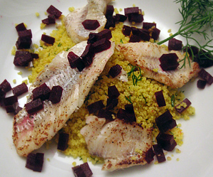

Merlanfilets auf Safran-Couscous
150 g Couscous in 1.75 dl Wasser 5 Minuten einweichen. 180 g Sauermilch, 1 EL Zitronensaft, 1 Briefchen Safran und ein EL Dill dazu geben, mit Salz und Pfeffer abschmecken. 200 g Randen rüsten, in kleine Würfel schneiden und blanchieren, beiseite stellen. Pro Person 100 g Merlanfilets mit Zitronensaft beträufeln, würzen. In nicht allzu heisser Bratbutter goldbraun braten. Den Fisch auf dem Couscous anrichten. Die Randen darüber streuen. Mit Dill garnieren.
